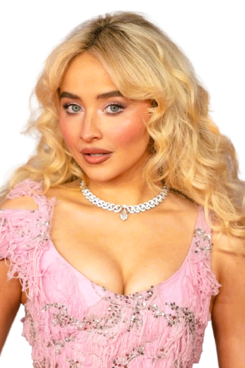

✦ the story ✦
Singer. Songwriter. Actress. Icon in the making.

Who is she
Sabrina Annlynn Carpenter was born on May 11, 1999, in Quakertown, Pennsylvania. From an early age she was drawn to performing — teaching herself to play guitar at age 9 and uploading covers to YouTube not long after. That same year she began training seriously in acting, setting the foundation for a career that would span both worlds.
She broke through to mainstream audiences via Disney Channel's Girl Meets World (2014–2017), where she played Maya Hart — a sharp, emotionally layered character that felt tailor-made for her natural wit. But Sabrina had bigger plans. Even while the show aired, she was quietly building her music career, releasing her debut album Eyes Wide Open in 2015 and never looking back.
Her Journey
2009
At just nine years old, Sabrina picks up a guitar and starts teaching herself to play. Around the same time she begins posting covers online — an early sign of the fearlessness that would define her career.
📍 Quakertown, Pennsylvania2013
Sabrina lands her first major acting role, appearing in the horror film The Hate U Give and making guest appearances on TV. She signs with Hollywood Records, setting both her acting and music careers into motion simultaneously.
🎬 Acting Debut2014 – 2017
Cast as Maya Hart in Disney Channel's beloved sequel series, Sabrina spends three seasons delivering some of the show's most emotionally resonant performances. Maya becomes a fan favourite — layered, funny, and fiercely loyal. The show cements her as a household name.
📺 Disney Channel2015
At just 16, Sabrina releases her debut studio album. A warm, coming-of-age pop record that introduces her voice to the world and hints at the songwriter she's becoming. We'll Be the Stars and Can't Blame a Girl for Trying stand out as early highlights.
🎵 Hollywood Records2016
Her sophomore album Evolution arrives with a sharper, more self-assured sound. Lead single Thumbs becomes a cultural moment — satirical, punchy, and utterly her own. It signals clearly that Sabrina is not just a Disney act. She is an artist.
✦ Artistic Shift2018 – 2019
Released in two acts, Singular marks her full transition into independent pop artistry. Almost Love, Paris, and Skin showcase a new emotional depth. She begins co-writing and co-producing — taking real ownership of her sound for the first time.
🎼 Hollywood Records2022
Everything changes. emails i can't send is raw, pointed, and witty in a way pop rarely allows itself to be. because i liked a boy becomes an anthem. Nonsense goes viral on TikTok. Feather gets a music video filmed in a church. She signs to Island Records and the world starts paying attention.
🔥 Island Records2024
Espresso drops in April and immediately becomes the song of the summer — charting globally, dominating Spotify, and turning Sabrina into a certified pop phenomenon. Please Please Please follows. The album debuted at #1 in multiple countries. At 24, Sabrina Carpenter is one of the biggest artists on the planet.
🌍 #1 Worldwide2025
Her seventh studio album arrives darker, bolder, and more unapologetically Sabrina than ever. Man's Best Friend is an artist in complete command — of her pen, her sound, and her story. No more proving anything. Just music made exactly the way she wants.
✦ Chapter Seven"I think I'm at a place in my life where I'm really just trying to trust myself and trust the process and enjoy it, because it goes so fast."— Sabrina Carpenter
Little Things
She taught herself guitar at age 9 with no formal lessons — just pure determination and a love for music that started before anyone was watching.
Sabrina co-writes almost every song on her albums. The wit, the wordplay, the devastating one-liners — all hers. She's one of pop's most underrated lyricists.
Singer, songwriter, and actress — she's appeared in films like Emergency and Clouds, and starred alongside Barry Keoghan in Saltburn-era fame circles.
Born and raised in Quakertown, Pennsylvania — a town of around 8,000 people. She went from uploading YouTube covers there to selling out arenas worldwide.
Her aesthetic is deeply rooted in vintage Hollywood glamour — red lipstick, retro silhouettes, and a cinematic approach to her music videos and live shows.
Espresso became one of the most-streamed songs of 2024, spending weeks at #1 globally and earning her a Grammy nomination — a career-defining moment that felt inevitable in hindsight.